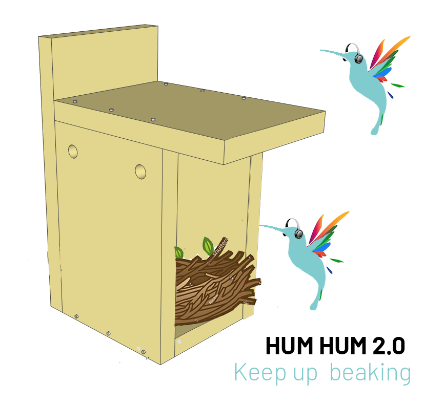
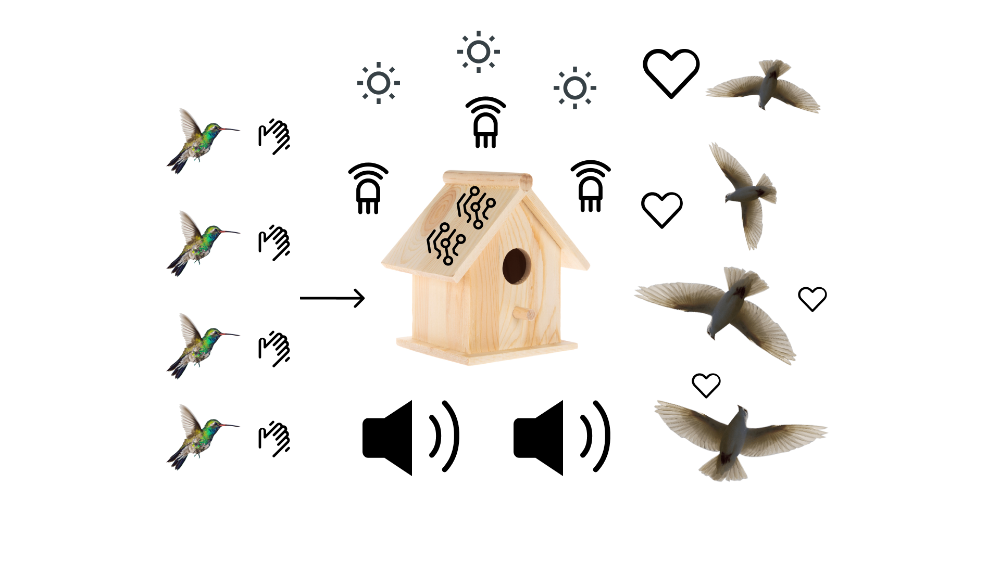
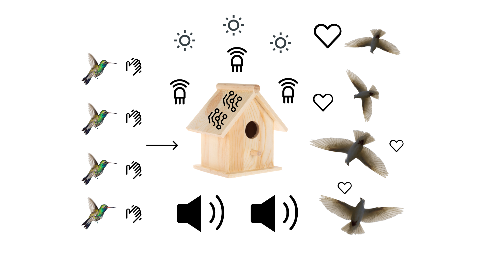
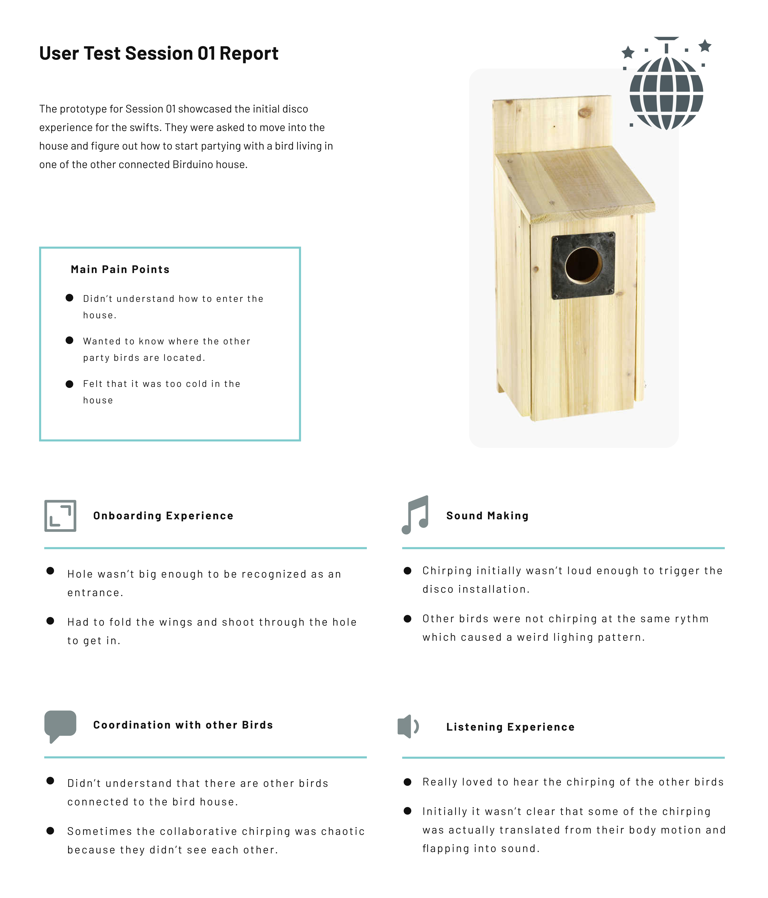
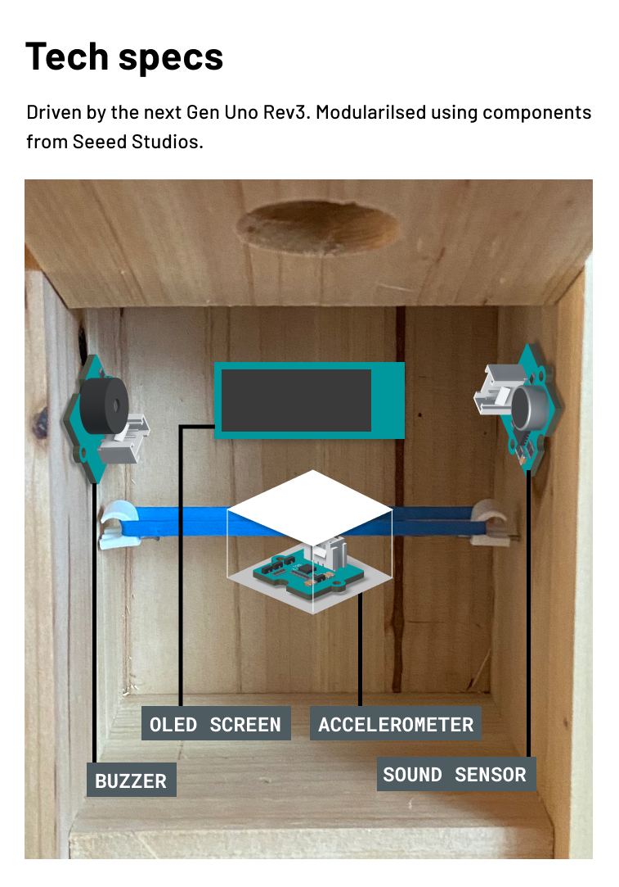
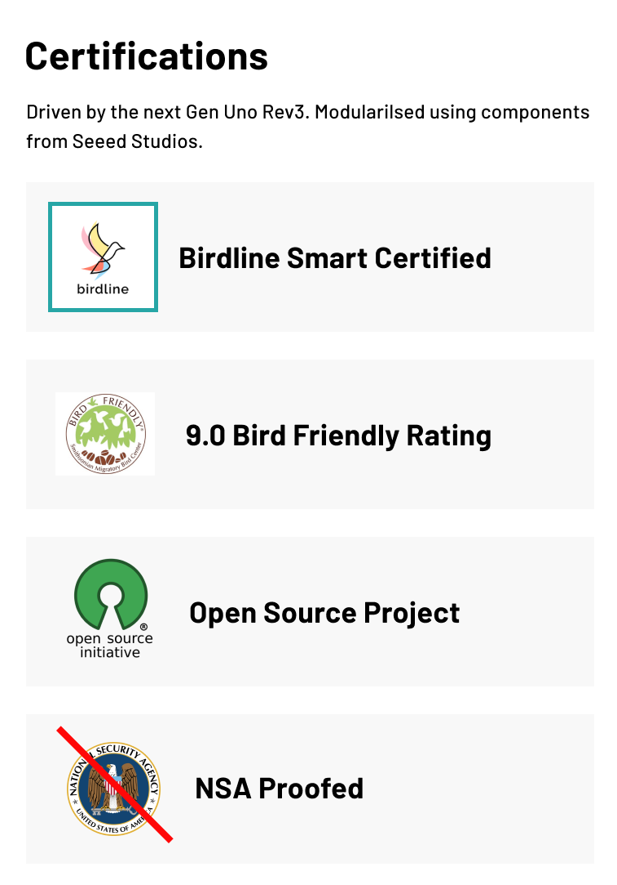
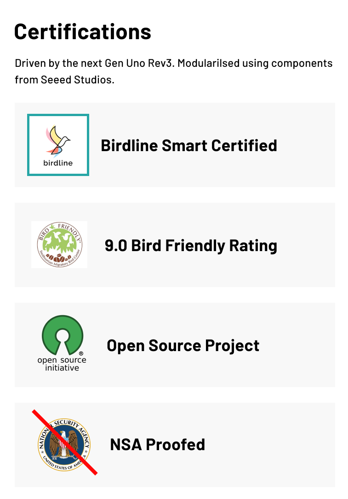

HUM HUM 2.0
Keep on beekin'
Hum Hum 2.0 is a technology designed to help hummingbirds express themselves. As they are unable to produce much sound, we at Hum Hum
decided to deal with this problem that affects hummingbirds all over the world.
The way it works is that vibrations caused by hummingbirds is snapped up by Hum Hum 2.0, which translates the input signals to sound through high-end piezo speakers. The algorithm has been in development for over 6 years, which is compatible with BirdScript, BirdSharp and B++. Hum Hum 2.0 is open source and free for any winged creature to use (minus pheasants).
When the sound is outputted, it creates some good vibes' around the pack, which can attract other bird species, again paving way for a more multi-cultural bird society. As it helps the hummingbirds express themselves, science tells us that they are approx. 169% more likely to find a mating partner, and that they will definitely have a good ol' time. 
The way it works is that vibrations caused by hummingbirds is snapped up by Hum Hum 2.0, which translates the input signals to sound through high-end piezo speakers. The algorithm has been in development for over 6 years, which is compatible with BirdScript, BirdSharp and B++. Hum Hum 2.0 is open source and free for any winged creature to use (minus pheasants).
When the sound is outputted, it creates some good vibes' around the pack, which can attract other bird species, again paving way for a more multi-cultural bird society. As it helps the hummingbirds express themselves, science tells us that they are approx. 169% more likely to find a mating partner, and that they will definitely have a good ol' time. 
The research
We love hummingbirds but they dont make much sound. According to researchers at Colombirdia and Harbird University, this is causing hummingbirds to feel depressed and can lead to chronic illnesses, such as bird fever and bird flu. We at Hum Hum took upon this challenge to create a tool for hummingbirds to express themselves beyond their silent dances. Several hummingbirds took part of this survey, some choose to remain anonymous.  The research began by interviewing several hummingbirds to gain a better view on the problem. Three hummingbirds agreed to have their name and picture published. Below is a sample of an interview:Victor, 21 bird years old
Interviewer: How does the silence and lack of sound production affect your day to day life?
Victor: *Intense vibration caused by rapid wing movement.*
Interviewer: And can you see a problem in this?
Victor: *Craps on the floor and leaves*
Interviewer: Thank you for your time.
Based on data collected from interviews, we needed to find a solution for hummingbirds to express themselves through sound.
The solution
Below is the solution, Hum Hum 2.0, and all its technical information. It is open source and free for any birds to use (minus pheasants). Have a browse through to find out if Hum Hum fits you.
 

More sample code for Hum Hum 2.0
Below you can find another sample code for getting started with Hum Hum 2.0.
int BUZZER = 5;
int light_sensor = A0;
int sound_sensor = A1;
void setup()
{
// put your setup code here, to run once:
pinMode(BUZZER, OUTPUT);
}
void loop()
{
int raw_light = analogRead(light_sensor); // read the raw value from light_sensor pin (A0)
int light = map(raw_light, 0, 800, 0, 85); // map the value from 0, 1023 to 0, 100
int soundValue = 0; //create variable to store many different readings
for (int i = 0; i < 32; i++) //create a for loop to read
{
soundValue += analogRead(sound_sensor); //read the sound sensor
}
soundValue >>= 5; //bitshift operation
int sounds = map(soundValue, 0, 800, 0, 500);
tone(BUZZER, light); //Set the voltage to high and makes a noise
delay(sounds);//Waits for 1000 milliseconds
noTone(BUZZER);//Sets the voltage to low and makes no noise
}